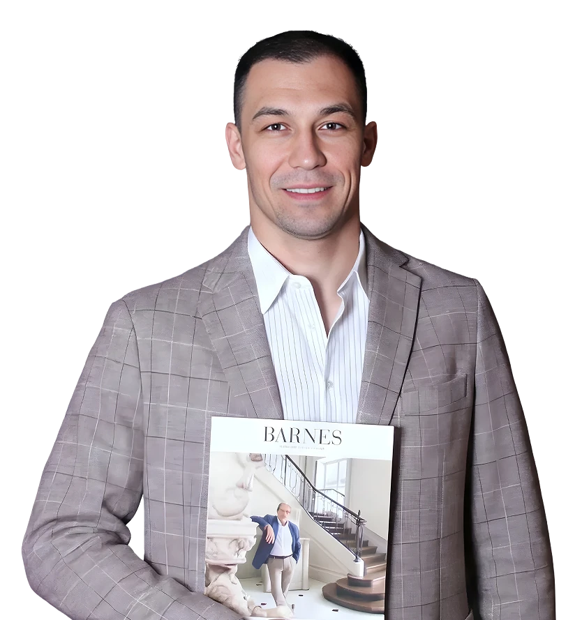

<div class="barnes-template owner-rent-reference-ui" data-barnes-block="floating-expert" data-variant="rent">
<aside data-v-cd0a1259="" class="floating-expert floating-expert--gorodskaya" aria-label="Руслан Прус"><button data-v-cd0a1259="" type="button" class="floating-expert__card" aria-haspopup="dialog"><span data-v-cd0a1259="" class="floating-expert__avatar"></span><span data-v-cd0a1259="" class="floating-expert__content"><span data-v-cd0a1259="" class="floating-expert__label">Руководитель департамента городской недвижимости</span><span data-v-cd0a1259="" class="floating-expert__title">Задать вопрос эксперту</span><span data-v-cd0a1259="" class="floating-expert__name">Руслан Прус</span></span></button><button data-v-cd0a1259="" type="button" class="floating-expert__close" aria-label="Скрыть карточку Руслан Прус"></button></aside>

</div>
